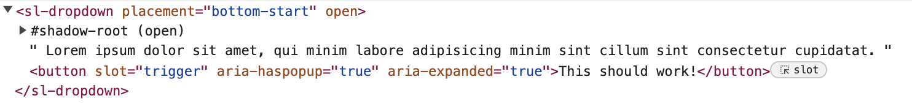

Published {% prettyDate date %}, {% readTime page %}
When you create a shadow root for a web component you have a choice that must make: should it be in "open" or "closed" mode? The MDN docs aren't very explicit about this, but you have to either include "open" or closed" or you'll get an error.
The above snippet would error if you tried attaching a shadow root without the mode option.
So which should you chose?
I argue that offering the shadow DOM was not a great decision. My thesis in this post is that we should be using the open Shadow DOM. The closed Shadow DOM does a poor job of enforcing privacy and creates unecessary problems for consumers and accessibility. To outline why, let's look at:
We've covered the shadow DOM
quite a bit
in this series, but we've always used the "open" mode without mentioning why.
Basically, if someone were to query your element, they would be able to reach
into the shadow root and traverse and manipulate the shadow root just like
they could query and manipulate anything else in the DOM. Only in an open
shadow root you would have to access the shadow DOM portion through
myelement.shadowRoot.
So, for example, if you wanted to programatically change something about a button in an open shadow DOM this is no problem. Query the custom element, reach into the shadow DOM and manupulate the button
This is not so in the closed shadow DOM. When you try to access the
shadowRoot property of the element, you'll receive null.
What's really interesting is that
not even the custom element host itself gets access to the shadowRoot
property internally. In order to make sure the class continues to have a
reference to the shadow root, it needs to store the created shadow root as a
property on the class. You could store it under a prefixed value like
_shadowRoot, but technically anyone could then still query your
component and access that property. So the only way for the component to
maintain access to the created shadow root is to save a reference of the
shadow root to a private class property like #shadowRoot
Here's an example of what this would look like with vanilla JS
{% include "./example1.html" %}
You can choose to expose the shadow DOM with other methods. In the example
above, if you query the element in the console and then run
someMethod(), you can actually get a reference to the shadow DOM
and interact with it. In this way, you get to choose what your consumer can
do.
But, this is very unappealing to me. In doing this, not only am I unecessarily constraining the way that I access my own shadow DOM, but I'm also depending on private class properties. For some very good reasons I'm wary of using private properties and methods.
Still, to see what this is like in Lit, take a gander at this example:
{% include "./example2.html" %}
This creates issues. Yes, the shadow root is now closed... but how do you
access it inside the Lit class instance itself? You use
this.renderRoot which
for reasons is publicly available.
Yes, you read that right. For LitJS to work well, access to the shadow root is
made publicly available, closed or open. If you read the linked issue, this is
for many good reasons- decorators depend on renderRoot to be able to function
without a lot of overhead, and certain lifecycle methods depend on renderRoot
as well. There are ways to override these behaviors, but it's hard to justify
that the juice is worth the squeeze.
Let's talk about consumers next
One thing to consider that
we touched a bit on in my last post
was that sometimes you may need to inspect the contents of slot to find
elements you need. For our example, we looked at
assignedElements() to get slot contents.
In shoelace, the shoelace drop menu expects that you provide a clickable element that it seeks out and attaches necessary aria attributes and event handlers.
I actually think this is the best way to go. Sure, it's a pain to search
through slot contents because it could be simple markup, or it could be a
complex tree of nested shadow roots. But if I were to give a button to a
component in it's trigger slot, I expect it to wire up the
necessary parts for me.
But then consider if the consumer wants to provide a button in a closed shadow DOM. In Shoelace's case, you can't inspect the closed shadow DOM's tree, and you won't be able to determine what to wire up.
Here's an example where a simple closed shadow root button could break shoelace:
{% include "./example3.html" %}If you click the triggers, you will see that the dropdown will open for each. Everything's working great, right?
Well, not exactly. Shoelace was able to notice the trigger click not because it went into the closed shadow DOM and found the button, but because the click event listener is on the slot element. Comparing the two buttons, the aria attributes are missing in the closed shadow root. Aria attributes are broken with a closed shadow root. So while this is as graceful as possible for shoelace, the closed shadow root inhibits shoelace from adding proper aria attributes.
Here is the DOM with a regular (no shadow root) button element:
Here is the DOM with a closed shadow root button element. Notice the aria attributes could not be attached:
Again, accessibility is an evolving area of web components, so perhaps we'll be able to cover issues like these. However, the goal of the closed shadow DOM is to keep access to internals restricted by default. To me this is directly opposed to allowing programatic inspection, so it's a risk that these sorts of bugs will come along that don't have a great workaround.
All this to say, well-known libraries expect to be able to traverse DOM contents to provide accessibility and functionality out of the box. They expect that any web components will not be closed. They also generally do a great job of only messing with internals that are necessary and they're very careful about doing so. Consumers of libraries necessarily will break many established libraries if their own libraries are closed by default.
One of the touchstones to good accessbility with dropdowns, modals, and dialogs is that each should trap focus within the component. What this often requires is that the developer scan through all the elements inside the component and when someone would normally tab out of the content area and continue on with the page they are instead re-focused back to the first tabbable element in the component.
Basically, if someone were to be navigating through content in a modal with a keyboard, the modal that's open should be the only content they can navigate through until that modal is dismissed.
So what's the big deal? A web component can do that, right?
The short answer is yes: there's nothing really "new" about how web components interact with the DOM. We've been making focus traps since the practice evolved. However, the existence of a shadow root complicates finding all tabbable elements
We used to be able to make a simple query selector all call and get what we needed inside of a component:
The problem now is that we need to recursively search through any shadow roots, and any shadow roots inside those shadow roots, and so on and so on. This means that we need to implement a search that resembles this...
So, basically recursively find all the nested shadow roots in the page, and then find all tabbable elements in all those shadow roots. This should produce a depth-first sequential array of tabbable elements. Again, doable, but not as nice 😅 There's just one problem.
This is the same issue what we saw regarding accessibility, aria attributes, and DOM inspection in the previous section. This may cause issues, especially if the element is the first or last item in a focus trap. Here's an example using the shoelace dialog component, which searches for tabbable elements in much the same way as above. Try opening the dialog here and tabbing through the elements
{% include "./example4.html" %}
The problem is that shoelace's dialog element is unaware of the web component.
This is out of sync with a screen reader, which will recognize the web
component as you read through the dialog contents. This issue can be
alleviated with manually placing
tabindex="0" on all of your components that should gain focus,
but it doesn't make much sense moving through the document with screen reader,
and it's extra work to maintain and include.
There may be some workarounds for this. For some libraries, like focus-trap/tabbable, they try to solve the issue by accepting a function which returns a reference to the closed shadow DOM, which might help as a workaround. But this only works if you're expecting it.
Some good further reading:
Well, not really.
In the case of LitJS, the framework exposes the shadow root, open or closed.
To get around this requires a lot of boilerplate and extra work, and even then
many things will not work out of the box for things expecting the
shadowRoot to be available (like LitJS decorators
@query(), etc.)
Even if you're willing to put up with all this, there are easy ways to bypass and crack open the closed shadow DOM. Just take a look at this snippet, and inspect the shadow dom in the example DOM:
{% include "./example5.html" %}That's right... you can modify the Element prototype and basically crack open any web component on the page.
"But wait!" you might say, "That's bad manners! That's like modifying a property or a method with an underscore prefix! Isn't a prototype injection like this a mortal sin?" Yes, but the closed shadow DOM is so hard to work with I can easily see people doing this. The reality is that people can and will take advantage of this. The fact that this is so easy to do, in my mind, convinced me that trying to enforce privacy or encapsulation through a closed shadow DOM is the wrong approach. Even using a closed shadow DOM as a deterrent to me makes your life so annoying to develop and is so easily cracked that it just doesn't make sense.
Consider also that if you look at any of the major web component libraries out there, I know of none that use the closed shadow DOM. Popularity doesn't mean "better" across the board, but it usually is an indicator of the right path to take, especially among well-designed libraries.
I would offer that strong documentation, allowing flexibility by offering a robust API, and abstracting at the right level will all stop people from trying to mess with your internals. And, frankly, if people mess with the internals of your component, and things break for the consumer, it's their fault.
It's very useful to know about the closed shadow DOM. I think at one point it was trying to provide something in theory that is not bad at all. It turns out in practice that closing the shadow DOM doesn't achieve what was intended. Here are the main reasons:
What do you think? Is there something I missed? Am I just plain wrong? {% socials %}